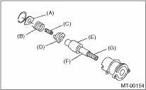

MANUAL TRANSMISSION AND DIFFERENTIAL(5MT) > Reverse Check Sleeve
1. Install the return spring (1st — 2nd), return spring cap, reverse accent shaft, check cam, return spring and check spring to the reverse check sleeve.
NOTE:
Be sure to position the bent section of reverse check spring to fit in the groove of the check cam.

|
(A) |
Reverse check plate |
|
(B) |
Reverse check spring |
|
(C) |
Return spring (5th-Rev) |
|
(D) |
Reverse check cam |
|
(E) |
Reverse accent shaft |
|
(F) |
Return spring cap |
|
(G) |
Return spring (1st-2nd) |
2. Hook the curved section of the reverse check spring over the reverse check plate.
3. Rotate the cam so that the protrusion of the reverse check cam comes to the opening of the plate.
4. With cam held in that position, install the plate onto the reverse check sleeve and hold in place with the snap ring.
5. Position the new O-ring in the groove of sleeve.